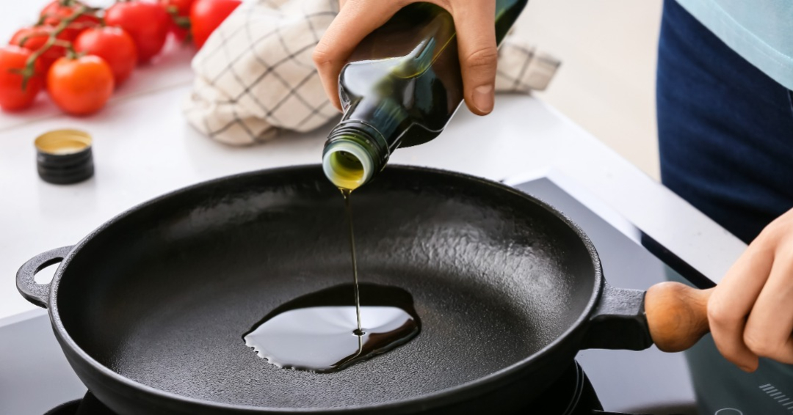
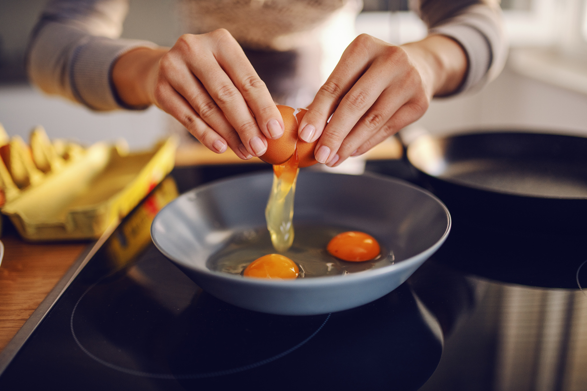
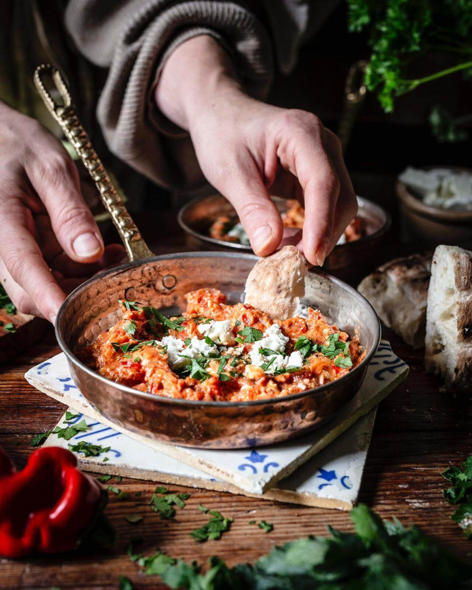

Zubereitung

Schritt 1: Zwiebel, grüne Paprikaschote und Tomaten in kleine Stücke schneiden.

Schritt 2: Olivenöl in einer Pfanne erhitzen und Zwiebeln sowie Paprika glasig anbraten.

Schritt 3: Tomaten und Eier hinzufügen, mit Salz, Pfeffer und Paprikapulver würzen und unter Rühren stocken lassen.

Schritt 4: Sobald die Eier gestockt sind, wird das Menemen serviert – optional mit frischen Kräutern garnieren.